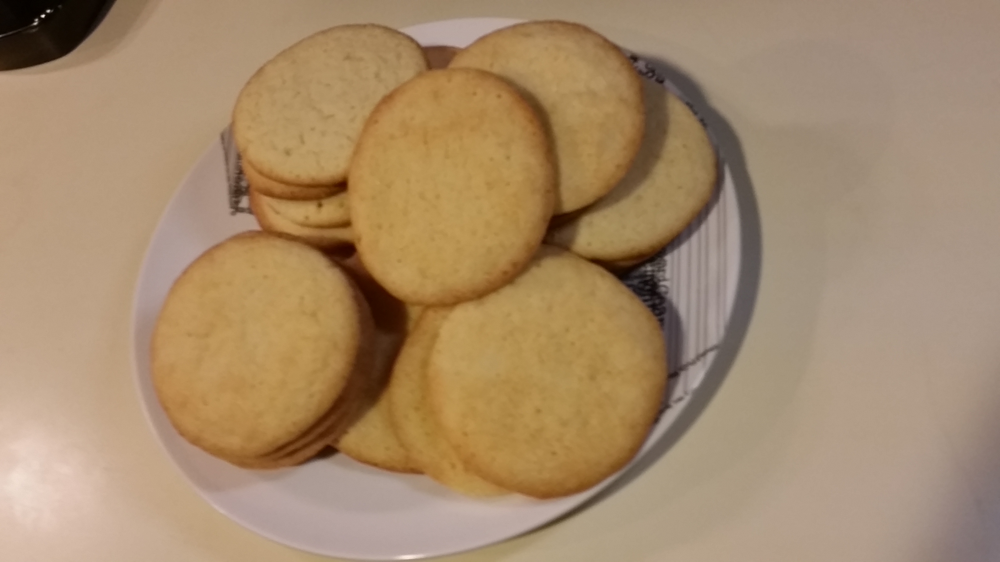

3 cups all-purpose flour, measured then sifted
1 1/2 teaspoons baking powder
1 teaspoon fine sea salt
3 sticks unsalted butter softened (1 1/2 cups)
1 1/2 cups granulated sugar + extra for rolling
2 large eggs
1 tablespoon pure vanilla extract
Step: 1
Preheat the oven to 375 degrees F. Line several baking sheets with parchment paper. Mix the flour, baking powder, and salt in a medium bowl.
Step: 2
Place the softened butter and sugar in the bowl of your electric mixer. Cream the butter and sugar together on high until light and fluffy, 3-5 minutes. Then turn the mixer on low and add the eggs and vanilla extract. Scrape the bowl.
Step: 3
With the mixer running on low, slowly add the flour mixture. Scrape the bowl and beat again for 30 seconds.
Step: 4
Pour some extra sugar into a bowl to coat the cookies. Scoop the dough out and roll into 1-inch balls. The dough should be soft and delicate. Shake each ball in the sugar bowl to coat, then place on the cookie sheets 2 inches apart. Use the bottom of a drinking glass to press down on each ball, until it's 1/3- to 1/2-inch thick.

Step: 5
Bake each sheet of sugar cookies for 9-11 minutes, until the edges are slightly golden and the centers are just barely set. Cool completely on the cookie sheets.
Now you have learned how to make Sugar Cookies!! Try to do them yourself!! Be sure to check out the histroy page and some customer testimonials!!